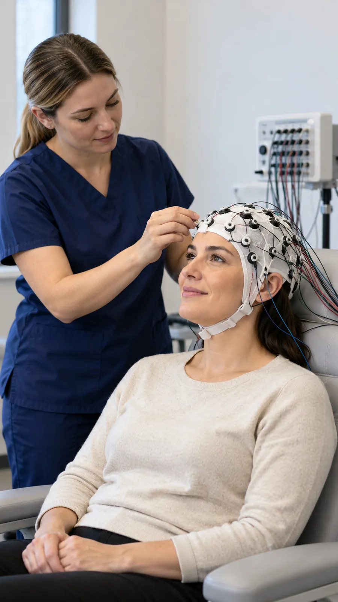
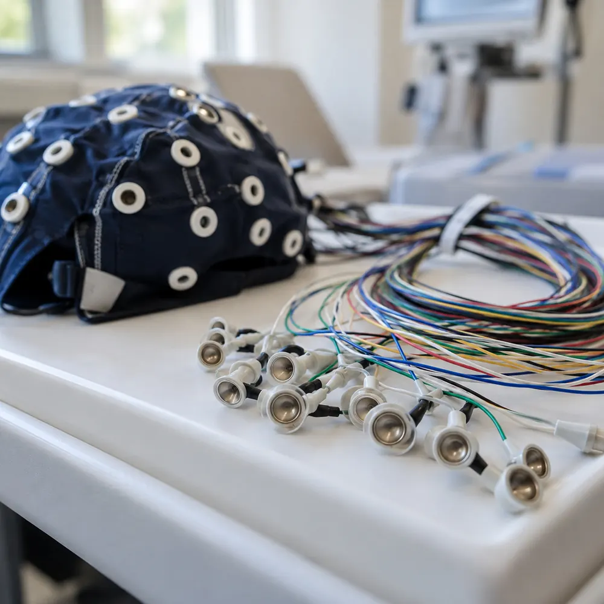
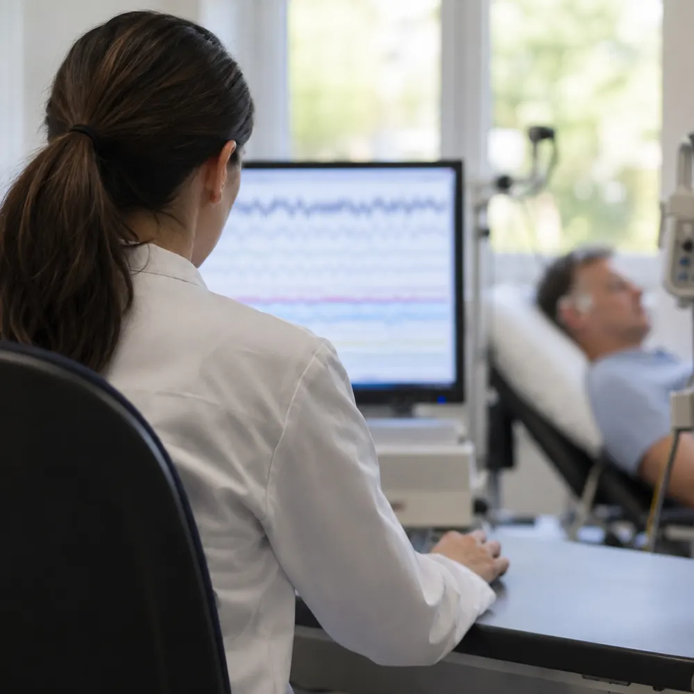
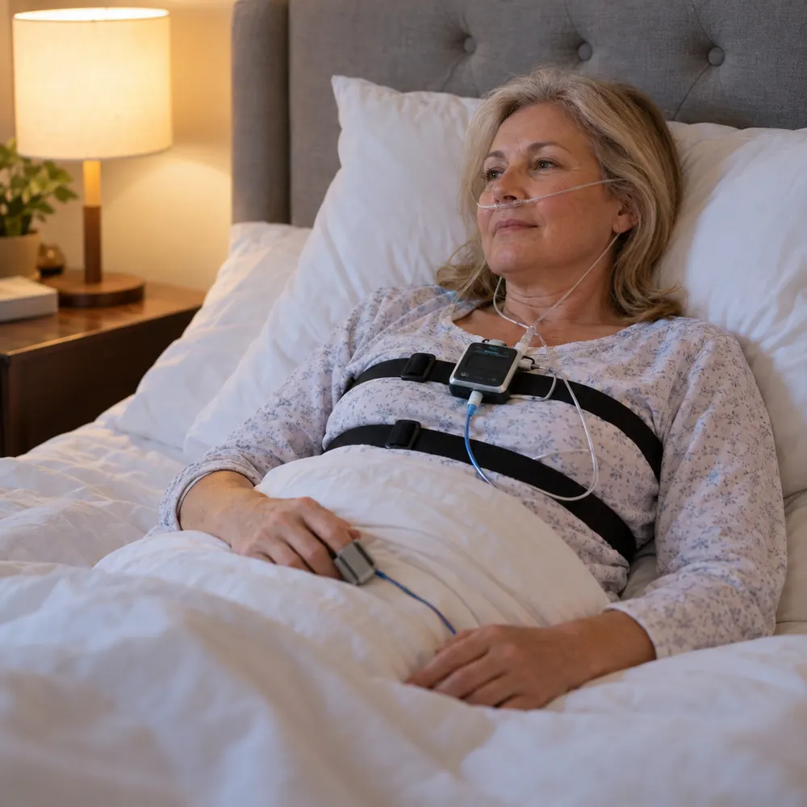
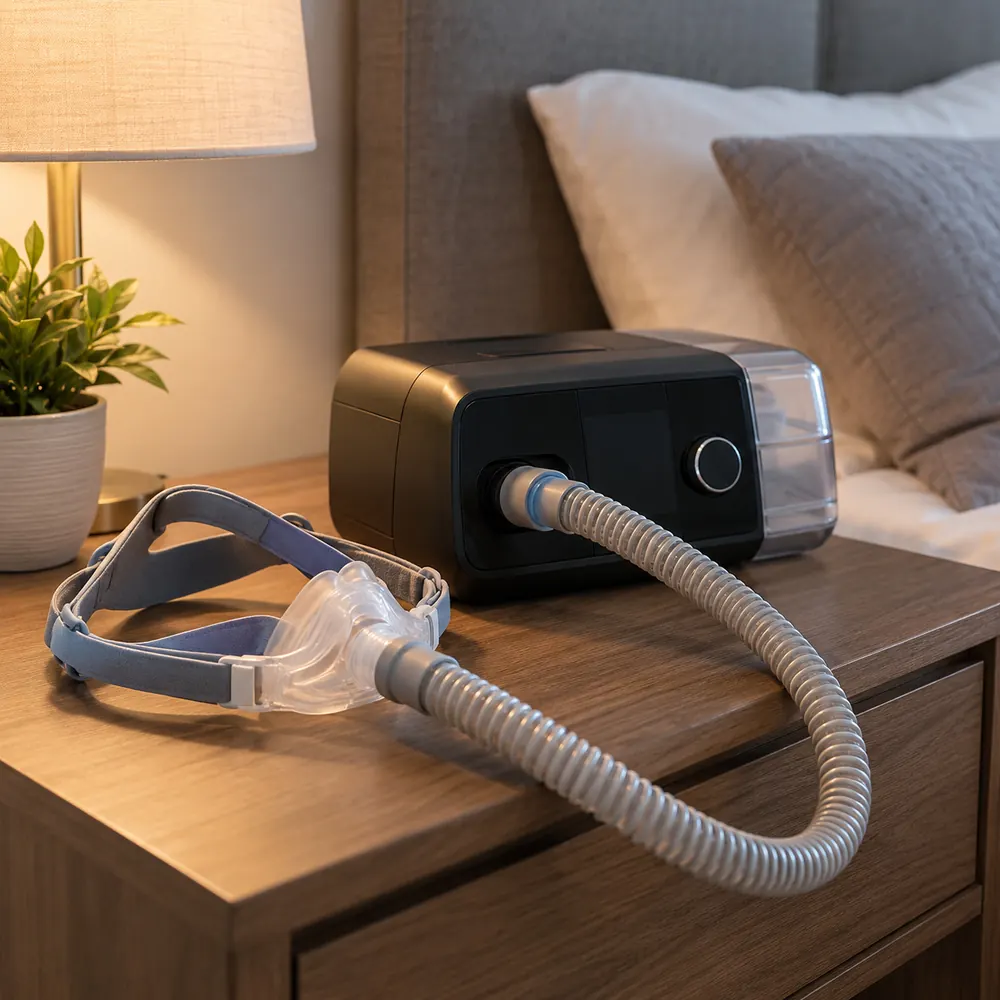
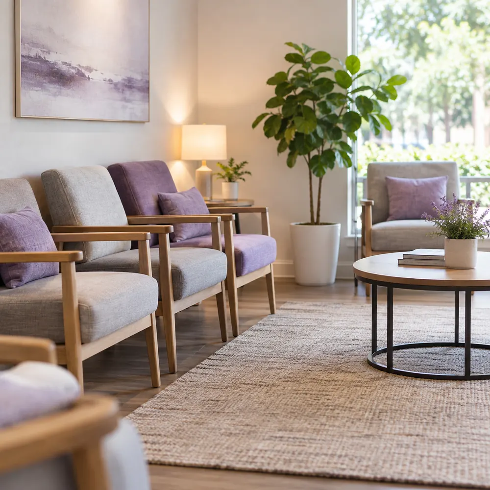
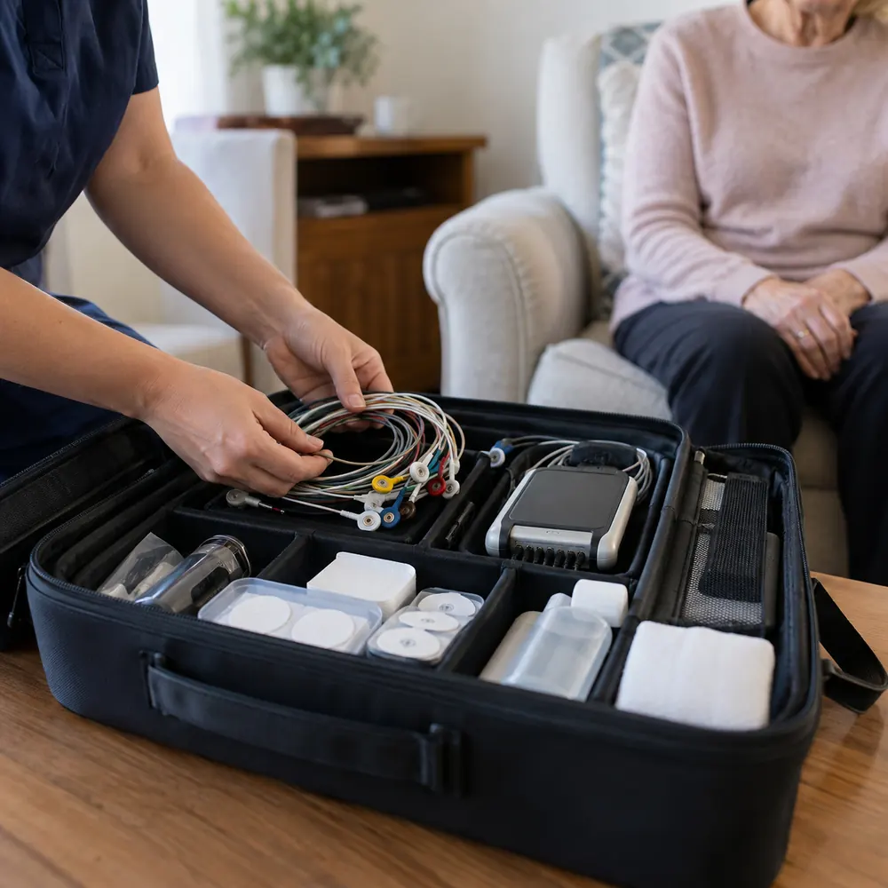
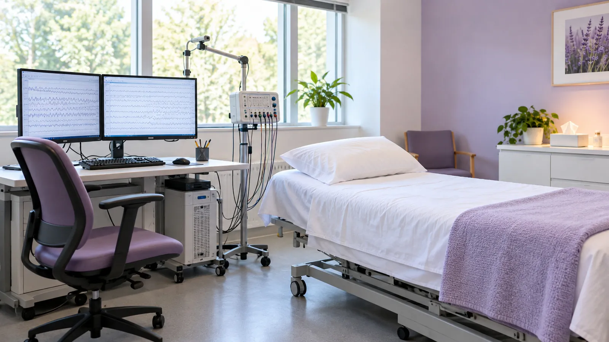

Consultorio en Floresta · domicilio · internación
Estudios neurofisiológicos con informe neurológico en 48 h
Electroencefalograma, mapeo cerebral computarizado, poligrafía respiratoria y titulación de CPAP. Cada estudio, explicado antes de hacerlo.

-

Electroencefalograma Registra la actividad eléctrica cerebral. Cómo es -

Mapeo cerebral computarizado Análisis computarizado del registro EEG. Cómo es -

Poligrafía respiratoria Registra tu respiración mientras dormís. Cómo es -

Titulación de CPAP Define la presión adecuada de tu equipo. Cómo es
- Venancio Flores 3975Floresta, CABA
- +54 9 11 3091-0058WhatsApp
- Lun a vie 9 a 18 h · Sáb 9 a 13 hHorario de atención
- Teléfono fijoA confirmar
Estudios con informe neurológico · Imágenes ilustrativas
Información clara para cada estudio
Elegí el estudio que te pidieron: qué es, cómo prepararte y cómo se hace, con una muestra del registro.
- Controles clínicos
- Exámenes laborales
- Ingreso a fuerzas
- Duración
- 40 a 60 minutos aprox.
- Dónde
- Consultorio, domicilio o internación
- Informe
- Neurológico, en 48 h
Electroencefalograma
Registra la actividad eléctrica del cerebro con pequeños electrodos apoyados sobre el cuero cabelludo. No duele y no pasa corriente: el equipo solo lee.
Para qué se pide
Lo pide el médico para estudiar convulsiones, desmayos, mareos o dolores de cabeza persistentes, y también como control laboral o de ingreso a fuerzas.
Antes de venir
- Cabello limpio y seco, sin crema, gel, aceite ni spray.
- Comé como siempre: no hace falta ayuno.
- No suspendas tu medicación salvo indicación médica.
- Traé la orden y, si tenés, estudios anteriores.
Cómo es, paso a paso
- Te acomodás sentado o recostado.
- Colocamos un gorro con electrodos y un gel conductor.
- Registramos con ojos cerrados y abiertos; a veces se pide respirar hondo o mirar una luz.
- Duración
- 45 a 60 minutos aprox.
- Dónde
- Consultorio, domicilio o internación
- Informe
- Neurológico, en 48 h
Mapeo cerebral computarizado
Es un electroencefalograma analizado por computadora: el registro se procesa y se muestra como un mapa de colores de la actividad de cada zona del cerebro.
Para qué se pide
Suma una lectura cuantitativa al electroencefalograma, útil para comparar zonas y seguir la evolución de un estudio a otro.
Antes de venir
- Cabello limpio y seco, sin crema, gel, aceite ni spray.
- Comé como siempre y dormí tus horas habituales.
- Avisanos qué medicación tomás.
- Traé la orden y, si tenés, estudios anteriores.
Cómo es, paso a paso
- Se registra igual que un electroencefalograma, con el gorro de electrodos.
- El trazado se digitaliza y se analiza por computadora.
- El informe incluye el registro y los mapas de actividad.
- Duración
- Una noche de sueño
- Dónde
- En tu casa o en internación
- Informe
- Neurológico, en 48 h
Poligrafía respiratoria
Estudia cómo respirás mientras dormís. Unos sensores registran el paso del aire, el movimiento del pecho y el abdomen, el oxígeno en sangre y el pulso durante la noche.
Para qué se pide
Se pide ante ronquidos fuertes, pausas al respirar dormido o mucho cansancio durante el día, para estudiar la apnea del sueño.
Antes de venir
- Hacé tu día normal y acostate a tu hora de siempre.
- Evitá el alcohol y las siestas largas ese día.
- Sin esmalte ni uñas postizas en el dedo del sensor.
- Tené a mano la orden médica.
Cómo es, paso a paso
- Colocamos el equipo y te explicamos cómo funciona.
- Dormís con los sensores puestos toda la noche.
- A la mañana se retira el equipo y se analiza el registro.
- Duración
- Una o más noches
- Dónde
- En tu casa o en internación
- Informe
- Neurológico, en 48 h
Titulación de CPAP
Busca la presión justa del CPAP, el equipo que manda aire por una máscara para que la vía respiratoria no se cierre mientras dormís.
Para qué se pide
Es para quienes tienen indicado CPAP por apnea del sueño: define con qué presión va a trabajar el equipo en tu tratamiento.
Antes de venir
- Traé la orden con la indicación de CPAP.
- Si ya tenés equipo y máscara, tenelos a mano.
- Avisanos si tenés congestión o molestias en la nariz.
Cómo es, paso a paso
- Ajustamos la máscara para que quede cómoda y sin fugas.
- Dormís con el CPAP mientras se registra tu respiración.
- Con el registro se define la presión indicada para tu tratamiento.
Te atendemos donde lo necesites
Mismo estudio y mismo informe: elegí el lugar que te quede mejor.
-

01En el consultorio
Venancio Flores 3975, entre Flores y Floresta. Coordinás día y horario por WhatsApp.
-

02A domicilio
Vamos a tu casa con el equipo portátil: más cómodo para personas mayores, con movilidad reducida o para los estudios del sueño.
-

03En internación
Hacemos el estudio en la habitación, en hospitales y clínicas con internación. Consultanos por tu institución.
Estudios para afiliados de OSOETSYLRA
Obra social de trabajadores tintoreros, sombrereros y lavaderos de la República Argentina · RNOS 1-2740-6.
Particulares: en el consultorio de Floresta, a domicilio o en internación.
Atención en Signo Médico
- Sede CulpinaFlores
- Sede San MartínProvincia de Buenos Aires
- Sede San JustoProvincia de Buenos Aires
Cómo pedir tu estudio
- 1
Escribinos por WhatsApp
Mandanos foto de la orden médica y contanos qué estudio te pidieron.
- 2
Coordinamos día y lugar
En el consultorio, en tu casa o en la habitación de internación.
- 3
Te pasamos la preparación
Las indicaciones de tu estudio, para que llegues listo.
- 4
Recibís tu informe
Informe neurológico en 48 horas.
Consultorio en Floresta, CABA
Venancio Flores 3975, en el límite entre Flores y Floresta.
Horario de atención
Horario de atención
- Lunes a viernes9 a 18 h
- Sábados9 a 13 h
- Domingos y feriadosCerrado
Domicilio e internación: con turno coordinado por WhatsApp.
Estudios a cargo de la Tec. Sofía Arce · MN 234171
Fotos Imágenes ilustrativas
Preguntas antes del estudio
Si te queda alguna duda, escribinos y te respondemos.
¿El electroencefalograma duele?
No. Los electrodos solo leen la actividad del cerebro: no pasan corriente ni producen molestias. Puede quedar un poco de gel en el pelo, que sale con un lavado.
¿Tengo que dejar la medicación antes del estudio?
No la suspendas por tu cuenta. Seguí lo que te indicó tu médico y contanos qué tomás cuando coordinamos el turno.
¿Cómo tengo que ir con el pelo?
Limpio y seco, sin crema, gel, aceite ni spray. Si tenés trenzas o extensiones, avisanos antes para ver cómo hacerlo.
¿Cuándo tengo el informe?
Los estudios se entregan con informe neurológico en 48 horas. Coordinamos la entrega por WhatsApp.
¿Pueden hacer el estudio en mi casa?
Sí. Hacemos estudios a domicilio a particulares y en hospitales con internación. Escribinos con la dirección y coordinamos día y horario.
¿Qué tengo que llevar?
La orden médica, tu DNI y, si tenés, estudios anteriores. Si sos afiliado a OSOETSYLRA, también la credencial.
Escribinos y coordinamos tu estudio
Contanos qué estudio te pidieron y dónde preferís hacerlo. Te respondemos por WhatsApp con día, horario y preparación.
Teléfono fijo: a confirmar